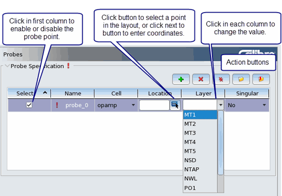

You can specify
probe points in your parasitic model using Calibre Interactive.
Probe points are used to verify timing from specific points on each
net.
Procedure
- Click the Inputs button
on the left panel.
- Click the Probes tab.
- Do one of the following, depending
on whether you have an existing probe file:
The interface should look similar
to that shown in the following figure.
Figure 1. xACT Probes Page
- Click in each column to specify
the required parameter. You can hover your mouse over each column
header to view a tooltip for the parameter.
To provide the probe location, click
the button
to choose a location in a connected layout design tool. To enter
coordinates, click next to the button
and enter a space-separated coordinate pair.
- When done,
click the button
to save the probe file.